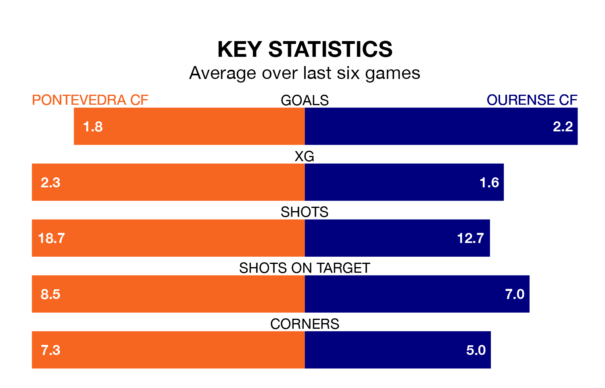

The Segunda División RFEF Group 1's top two sides face each other at Estadio Municipal de Pasarón in Sunday's kick-off, when Pontevedra CF host second-placed Ourense CF.
Pontevedra have picked up 18 wins and 10 draws from 31 games so far this season, and sit on the same number of points as the visitors going into the 4pm match.
Ourense, meanwhile, have won 18 and drawn 10, picking up 64 points.
With 66 goals in 31 games so far this season, Pontevedra are the league's highest scorers with 2.1 goals per game. And they are conceding fewer than average, letting in 27 goals at a rate of 0.9 per game.
Ourense are also above average scorers, with 1.5 goals per game, compared to a league average of 1.1. They have conceded 0.6 goals per game.
The home team are in reasonable form in the Segunda División RFEF Group 1, with three wins and three draws from their last six games.
With three wins and two draws over that period, the visitors' form is slightly worse – they have taken 11 points from 18, compared to Pontevedra's 12.
Pontevedra's last match was on April 14, a 2-2 draw against SD Compostela, with Carlos López Vila Sánchez and Dalisson de Almeida Leite getting the goals for Pontevedra.
Ourense beat Coruxo 5-1 last time out, on April 13, with José Gabriel Palmás Fervenza (two) and Alejandro Gil Rochina on the scoresheet.
Updated: 15:40 (UTC), 18/04/24